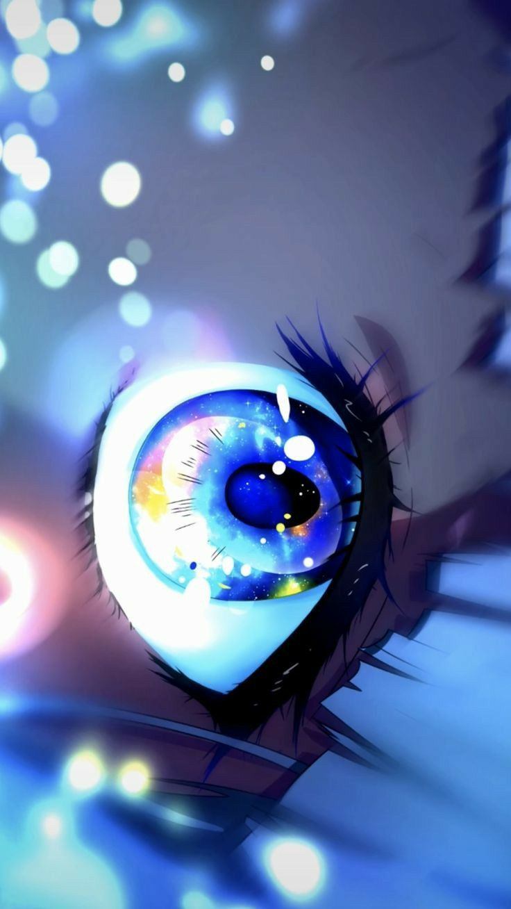

Parabéns para tihhh✨
Vamos lá Sra! Queria te dar parabéns pelo seu dia, embora tenha sido completamente insensível ontem a noite, isso aqui vai ser meu pedido de desculpas :).
Que seu dia seja incríve e que você possa desfrutar o máximo dessa data tão especial. Você merece tudo, por ser essa pessoa espetacular que é, merece um vida cheia de carinho e paz, uma vida digna do ser humano que tu é.

Falo por mim e por praticamente todas as pessoas que conheço, tu é muito importante, de uma maneira que eu não consigo conceber. Você não se esforça, e mesmo assim pessoas muito legais são próximas a você, até quem não te conhece muito, de alguma maneira gosta de tih!
Uma pouco de carinho para você💕:
Agora vou tentar te deixar feliz!💜 Olha, sei que não sou a salvação da vida de ninguém e que não cosigo mudar o humor ou o sentimento de alguém so com minhas palavras, mas não custa nada tentar. Eu de verdade tenho o coração meio mole então desculpa desde já. Sra tu é uma das, não, não; Tu é a pessoa mais especial que existe na minha vida, e eu sou capaz de qualquer coisa pra tirar um sorrizinho de tih. Tu entro de voadora na porta da minha vida, e com toda a sinceridade, eu não imaginava o quão impactante você seria pra mim. Tu me faz rir, me faz pensar em tu em momentos completamnete aleátorios e o principal, tu deixou a vida de um nerd esquistinho (eu), muito mais feliz 🤍

Moça acho para acabar, eu tenho que te agradecer. Agradecer pela pessoa que você é e por tudo que já fez por mim, eu sou meio doido das ideinha mas nunca foi e nunca vai ser culpa sua; eu vu te ajudar com tudo, vou ta junto de tih sempre, quando precisar de atençaõ vou te dar também, te mimar o máximo possível e tentar sempre te deixar muito feliz🤍
Já deu espaço para tirar print né? Então eu posso falar agora:
Te amo mi vida💕